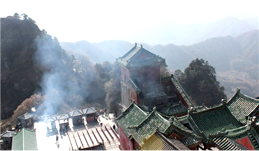
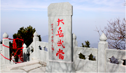
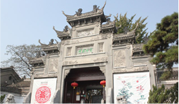
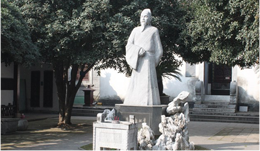
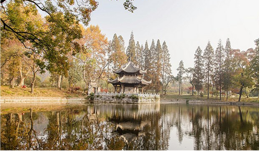
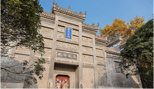
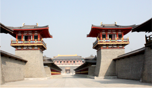
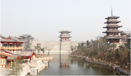

襄陽X文化智慧寶庫
武當山中國武術最大基地
對於武當山的印象，總是與武俠小說脫不了干係，尤以張三豐最為著名，在名門正派中與少林、峨嵋、華山、崑崙、崆峒齊名，至今不但是中國道教名山，還承襲「陰陽消長、八卦演演變、五行相剋」的內家拳武略，被尊為中國武術最大基地，有「北崇少林、南尊武當」之稱。 ‧‧‧‧‧‧看更多

米公祠書法藝術的寶庫
米公祠，原名米家庵，建於元代，擴建於明代，是紀念北宋書法家米芾而修建的祠堂。庭院清靜，碑石林立，怪石嶙峋，銀杏參天，散發出寧靜致遠的氛圍，內室也收藏許多米芾臨摹的書法名作，如《蜀素帖》、《研山銘》，另收藏與其並稱「北宋四大書法家」的蘇軾、黃庭堅、蔡襄等人筆跡，供眾瞻仰，時常可見喜愛書法的旅客駐足，仔細研究筆韻的身影。 ‧‧‧‧‧‧看更多

習家池中國私家園林鼻祖
或許你對習家池沒有那樣熟悉，但，提到中國最高領導人習近平，多半認識一些，「天下習姓，源自習國，望出襄陽」，可見習姓淵源，而習近平正是這池創建者襄陽候習郁的後裔，據說只要走到池中的湖心亭，抬頭觀望亭頂的葫蘆即可連升官級，常吸引旅客慕名前來。 ‧‧‧‧‧‧看更多

唐城中國最大影視基地
專門為著名導演陳凱歌將執導的電影《大唐鬼宴》而建。唐城中的花萼相輝樓、長生殿、御苑門等單體建築雄偉壯觀、色彩豔麗。漫步其間，高大的古典建築與漢水粼粼波光相映成趣，踏入大門後彷彿穿越時空夢迴唐朝。利用各種表現形式展現盛唐文化。 ‧‧‧‧‧‧看更多
